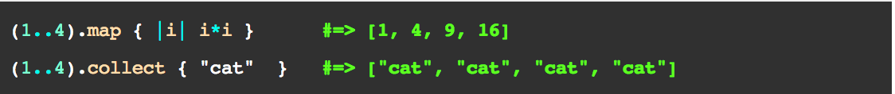

The Enumerable module in Ruby is one of the most powerful colelctions of methods in the entire language. It allows us to iterate over and manipulate data structures in almost any way you can think of.
So what's #map, then?
#map allows us to change the elements within an array and return a new one without changing the original array. This is incredibly important because we often want to keep the original data structure intact.
#collect...What's that?
#collect is a sibling of #map and accomplishes the same thing. There is literally no difference between the two, so use whichever one makes your code look better.
Example please??
Fine. Here's an example from the documentation:
#map and Enumerable are absolutely crucial to writing code in Ruby. Enumerable contains tons of useful ways to manipulate your data and quickly build powerful apps. If you've somehow missed it unitl now, give it a try!s